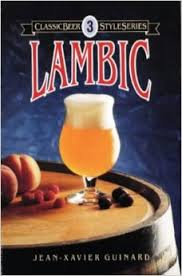

Lo + Destacado
-

Festival de Cerveza Artesanal Beer Factory
Para los amantes de la cerveza y para celebrar el Saint Patrick Day, el restaurante Beer Factory llevará a cabo su primer festival del cerveza artesanal. El Beer Factory Fest será el 18 de marzo, en el parqueo destechado de Avenida Escazú, contiguo a los consultorios del Hospital Cima.
-

¿Comó Inició?
Existen referencias de que en la remota Mesopotamia ya se producía cerveza. Se han encontrado hasta recetas de elaboración de cerveza....
-

Lambic
Las cervezas de la familia Lambic son cervezas de fermentación espontánea, que se elaboran en la zona de Bruselas....